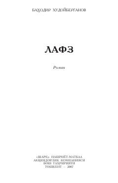

LInsoniylik, vafo va so'zda turish qadrini ulug'lovchi ta'sirli roman.
Ushbu asarda insonning o'z so'zida turishi, milliy qadriyatlar va oilaviy munosabatlar masalalari qalamga olingan. Muallif o'z burchiga sodiq qolish va hayotiy qiyinchiliklarni yengib o'tish mavzularini ta'sirli obrazlar orqali ochib beradi.